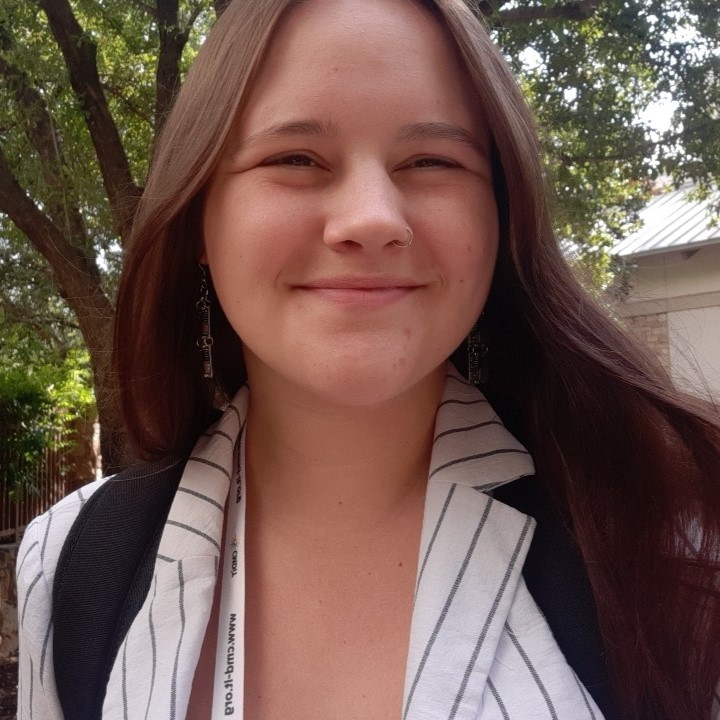
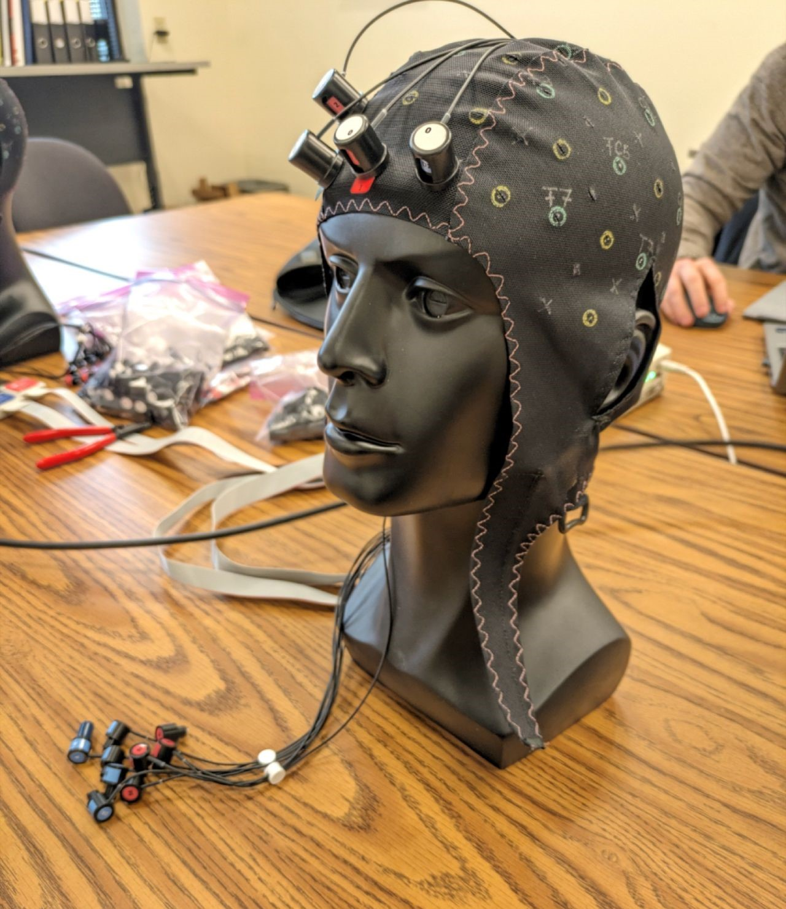
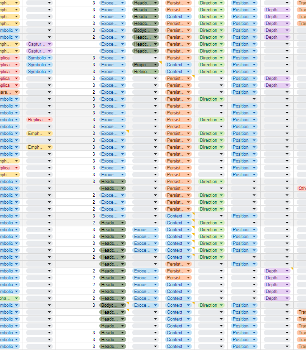
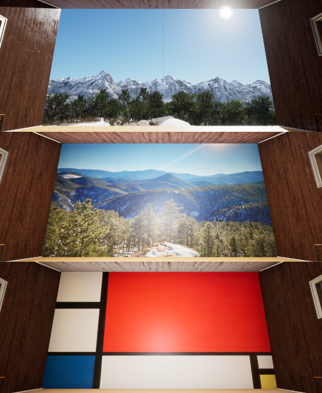
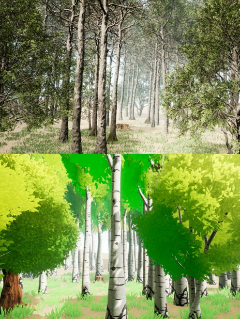
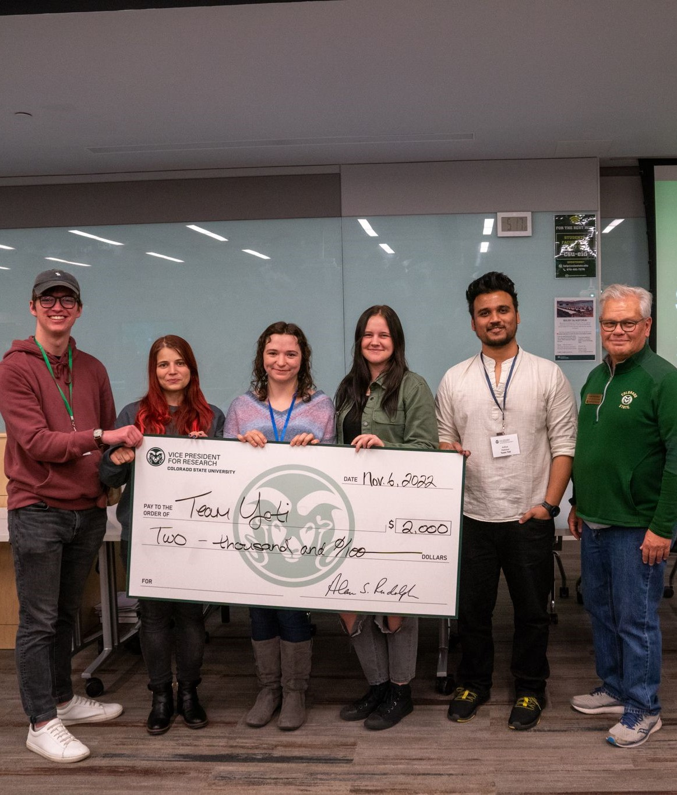
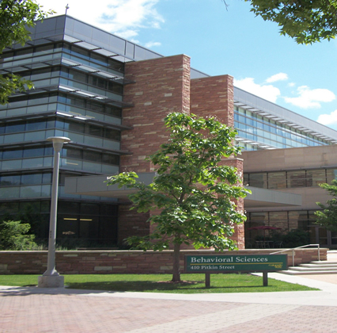
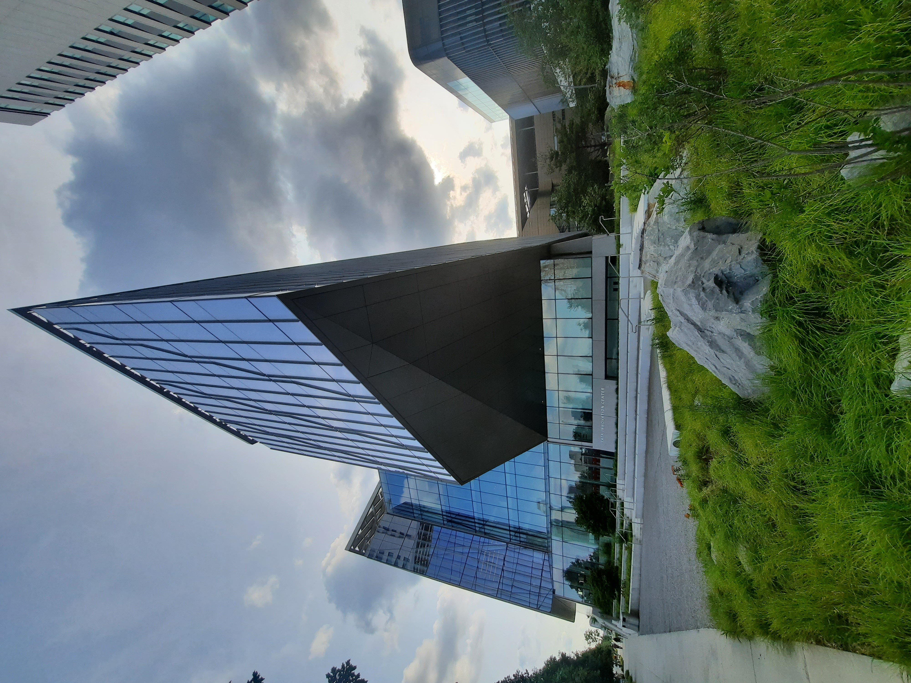

About Me

Welcome!
I am an aspiring researcher transitioning from my Bachelor's degree from Colorado State University to puruse my Ph.D. at the University of Colorado Boulder, both of which are in the Computer Science field. I am on a mission to explore how physiological signals can improve our virtual surroundings, whether that is in virtual or augmented reality. I was born in Madison, Wisconsin, but raised in Durango, Colorado, where I had the opportunity to grow my career interest in Psychology by asking why people do what they do! When starting my undergraduate with this question in mind, I was determined to work in a research lab early on. My determination has led me down a path of gaining four years of experience at the following research labs:
- System-Human Interaction with NIRS and EEG Lab: My newest research lab, which has adopted me over the summer of 2024 in preparation for beginning my Ph.D. with them in the fall. Leanne Hirshfields' lab has already brought me in as one of their own, starting strong with a project funded by the NAVY, introducing me to the world of brain signal measuring devices!
- Artificial Intelligence and Robotics Lab: The summer of 2023 brought me to New York City's Cornell Tech with Angelique Taylor, where I developed an augmented reality application for healthcare settings. My participation in Distributed Research Experience for Undergraduates brought us together as we pursued the idea of improving resuscitation cases by starting with team dynamics.
- Natural User Interaction Lab: The most influential research experience I have gained is in Francisco Ortega's research lab. I was in this lab until I graduated, and still am at heart. Here, I was placed on over five research projects, graduating with a co-authorship with ACM TAP and an in-progress first-authorship with ACM SAP.
- Memory and Metacognitive Lab: Under the mentorship of Matthew Rhodes, I started as a research assistant as early as my second semester of university. This lab was held in the Psychology department of Colorado State University, where I first got to help run research studies and gain insight into what it would mean to be a graduate student.
Projects

NAVY Cognitive Load within Virtual Reality
April 2023 to Current
This project is huge! Collaborators include CSU, CU Boulder, University of Northern Colorado, and University of Montana. Here, we are observing how users are influence by a manipulation of the three types of cognitive load: Germane, Extraneous, and Intrinsic. Starting on this project as a CSU student included attending meetings as the design was crafted, and later running experiments with participants. Once I graduated and began my transition to CU Boulder, I became very hands on the design of the virtual environment and the connection to brain signal measures. I have made modifications to the virtual environment in Unity to allow for Lab Streaming Layer (LSL). LSL enables event markers to be sent and received by both the fNIRS Aurora and EEG BrainVision applications to improve data analysis.

Interaction Cues Review
August 2023 to Current
For this project, another member and I are reading and decoding over 100 papers. When you are in a virtual settings, there are several types of cues around you that help direct you to the necessary tasks. There are a variety of cues and their appearence. Are they visual or audio? Are they attached to the user or some part of the environment? What information do they provide you? What triggers the cue to appear? These are all questions we want to address to help our meta-review of determining the most successful cues dependent on the context.

Forest Bathing: Beauty
2023 to Current
This was my primary project during the last two years of my undergraduate degree. This is essentially phase three of a project observing the characteristics of a virtual environment. By observing select characteristics and modifying each, we became familiar with how that characteristic influences user restorativeness. For this phase, we looked at beauty and movement in forest environments, as real forests have already demonstrated stress reducing effects. We found that the virtual 3D environment was not significantly different from the 2D virtual image, but was compared to the 2D virtual art and control condition. I have the opportunity to present this research experiment at ACM SAP August 2024 in Dublin Ireland.

Augmented Reality for Healthcare
May 2023 to December 2023
Innovative tools such as augmented reality used by healthcare workers could improve collaboration and task management in resuscitation cases. We conducted a field study with medical students performing resuscitation scenarios with one HCW using a HoloLens device to observe whether our virtual environment improves time management. We also focused on understanding how individuals interacted with the user interface of the AR device and virtual environment. Despite challenges in data collection, our findings highlight influential user feedback and critical experiment designs for successful implementations of AR technology in future investigations.

Forest Bathing: Realism
2022 to 2023
This is phase two of an ongoing project that I worked on with Rachel Masters during my undergrad. Phase one observed biomass where I got to be a participant, whereas, phase two took it a step further by observing realism. Realism is a characteristic of virtual enviornments that can influence user restorativeness. This project is my first published paper where I am featured as second author!

CSU's VR Hackathon
November 2022
One of the first events I participated in with members from the NUILab was CSU's VR Hackathon. My group placed 2nd with our complex virtual enviornment focused on creating a mindfulness program to improve overall well-being and emotion regulation. Each participant in my group designed their own environment, mine being focused on controlled breathing, which were all connected in a home screen environment where users can pick which mindfulness task they wanted to partake in. During this project I spent several hours of a weekend getting to know my group and learning skills to work together in a unique environment. Learn more here!

Math Study With Matthew Rhodes
January 2021 to December 2021
While my first 6 months on this project was essentially getting adjusted to being a research assistant, the second half I got to help run experiments. This lab is where I first became CITI certified and learned the ins and outs of performing a research experiment. The study I ran participants on was pretty automated where I specifically around to get users started and to help with any problems that arose. I did work with the participants to collect consent and demongraphic forms, and to later direct them to the computer where the math task would take place.
Publications
- Masters, R., Nicoly, J., Gaddy, V., Interrante, V., & Ortega, F. (2024). The impact of nature realism on the restorative quality of virtual reality forest bathing. ACM Transactions on Applied Perception, 17(2). https://doi.org/10.1145/3670406
Gallery
The Prepared Warfighter Portfolio Review 2024
.jpg)
FNIRS Data Analysis Workshop 2024
.jpg)
IEEE VR 2024
.jpeg)
CES 2024
.jpg)
Grace Hopper Conference 2023
.jpg)
TAPIA / STAR Celebration 2023

Quantico Virginia 2023
.jpg)
XR Access 2023
Multicultural Undergraduate Research Art and Leadership Symposium 2023

Rocky Mountain Celebration for Women 2022
.jpg)
TAPIA 2022
.jpg)
Contact
I think contact me boxes are tacky. Maybe just list my general contact information.